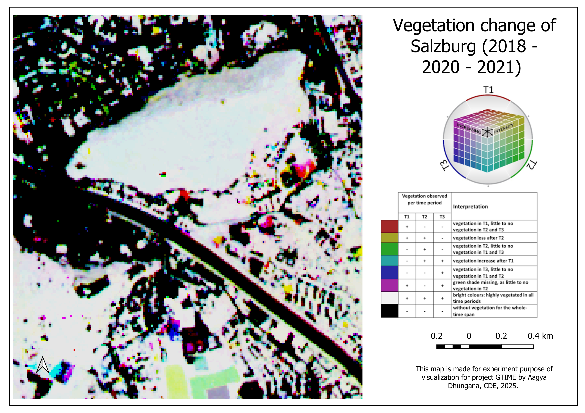
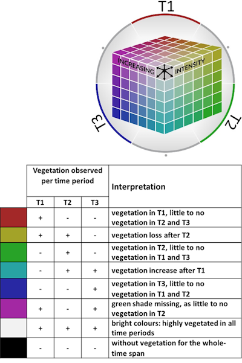
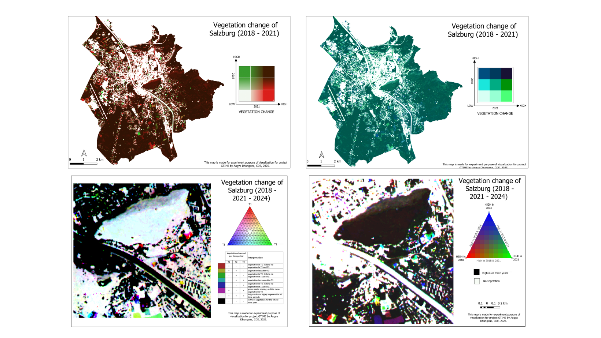

“Less is more” invaluable lesson from my internship for the Project GTIME
Imagine making multi-temporal vegetation maps. Sounds straightforward right? Just make multiple maps of different time frames. Now make it a single static layer covering 15 years of data. Still easy? Read on- because what sounds simple rarely is, and that gap is exactly where things get interesting and learnings become worthwhile.
The project: GTIME
GTIME is vegetation change data layer which is part of the bigger national spatial data infrastructure for Austria called GTIF-AT that aims to support green energy transition in the country. GTIME supports this infrastructure by delivering temporally rich single interpretable vegetation change base layer that land planners and policy makers can understand and interpret. The goal of GTIME is to instantly communicate big data into one clear accessible map so researchers can build other information and hypothesis on top of it and use it in to support their study.

Checkout GTIME's interface here
I always wanted to learn how Spatial Data Infrastructures(SDI) functioned so I could use the knowledge for Nepal, the country I come from, in future when needed. Working closely with GTIME enabled me to understand the internal mechanism of SDI, that they work best when distributed. However, along the way, I learnt greater lessons in cartography and geovisualizations which proved to be invaluable for my interests.

Presently used legend in GTIME
When I joined the internship, GTIME was working beautifully showing three years of change using a trivariate RGB color cube legend for a composite map- a technique used in geochemical soil mapping, forest land cover visualization, and remote sensing applications. It could encode three variables simultaneously, in this case, with 108 color derivatives representing different combinations of vegetation presence across three time steps. Elegant, technical -and, as we were about to confirm, quite difficult for most humans to actually interpret.
The problem I was trying to solve
Beyond just 3 years, GTIME's next goal was to represent 10-15 years of vegetation change in a single static base layer. This is where the color cube would stop working as it is structurally limited to three axes and the colors requirement would increase exponentially. Extending it to 15 years would require a legend - no screen, no human eye, could reasonably process.
Besides the scaling challenge, there was a cognitive load problem already present in the 3-year version. Users needed to hold multiple colors in working memory, cross-reference a complex rainbow legend, and extract spatial patterns- all at the same time (Kiefer et al., 2016; Dykes et al., 2010). Informal feedback from GTIME's own users confirmed this: the legend was difficult to understand, and connecting it back to the map was even harder.
So the question became: what visualization approaches can preserve the temporal richness of this dataset while actually being readable?
What I actually did
My internship was structured around three objectives set by the team:
In practice, these three ran in parallel- each one constantly reshaping the others. The literature review covered broad concepts ranging from trivariate RGB color cube encoding, 2D ternary plot legends for composite mapping, bivariate choropleth mapping, the Change-Affect-Trend (CAT) composite framework (Hird et al., 2016), the Time Series Change Visualization and Interpretation method (Julien & Sobrino, 2021), along with operational platforms like Global Forest Change and Global Forest Watch. I specifically looked for approaches that could compress temporal complexity without amplifying cognitive load for the users - a constraint that turns out to be much harder to satisfy than it sounds.
The experiments: bivariate and trivariate maps
For the short-term (2-3 year) visualization challenge, I prototyped two approaches in QGIS. The first was a bivariate choropleth map, stacking the 2021 and 2018 vegetation layers using a Multiply blending mode. The second was a trivariate map using a 2D ternary plot legend as a direct replacement for the existing 3D color cube.

Bivariate and trivariate experiments conducted
Two color palettes, both colorblind friendly were tested for the bivariate approach. The first was sequential green palette - theoretically seemed appropriate for vegetation, but in practice too low in contrast to distinguish subtle vegetation-change pixels. The second was a diverging red-green palette, specifically designed for this study. The result was notably clearer. The reason connects directly to visual saliency theory: using a dark brown for the most common phenomenon (high vegetation in both years) created a stable perceptual background against which the red and green changes could immediately "pop" (Stone, 2005; Matzen, 2025; Zimnicki et al., 2023). The dark background wasn't just an aesthetic choice - it had a cognitive reasoning.
“A well-designed map doesn't just show information- it controls where the reader looks first, and guides the interpretation.”
The ternary legend experiment started from a hypothesis: if we flatten the three-axis color cube into a 2D triangular gradient, it should be easier to display and interpret while still encoding three years compared to the 3D color cube. The literature offered little empirical evidence on this specific question, so I designed a user survey to test it directly.
The user survey: putting assumptions to the test
I designed and distributed a structured questionnaire to 19 respondents spanning four experience levels ranging from people with limited GIS background to Earth observation researchers with over ten years in forest management, data engineering, and cartography. Every respondent actively uses spatial products like GTIME in their work, which made their perspective particularly relevant.
The results were instructive. The RGB color cube was consistently rated the most difficult, with 60.7% of respondents identifying the legend as the primary source of confusion. Most took over a minute to form even a basic understanding of the map. The ternary legend was marginally easier meaning that the users were more confident identifying change patterns but still required more than 30 seconds for most respondents. This showed that the improvement over the color cube was smaller than anticipated earlier. The bivariate map, despite its structural limitation of mapping the same variable (vegetation) on both axes rather than two independent variables, was understood by 68.8% of respondents in under 30 seconds. Fifty-six percent ranked it the easiest of the three.
Looking forward: composite mapping and what the literature showed
For the 10–15 year problem, the literature pointed toward composite mapping approaches that derive semantically meaningful classes from temporal data rather than encoding raw spectral values.
Hird et al. (2016) showed that a decade of NDVI data can be compressed into a single three-band RGB image by deriving three metrics: Change (peak spectral difference), Affect (post-disturbance vegetation state), and Trend (long-term trajectory) - and encoding them into red, green, and blue channels respectively. The color assignments are deliberate: red draws attention to abrupt change, green signals stable vegetation, consistent with near-universal color associations. Ten years of data, one composite readable map.
Julien & Sobrino (2021) pushed further with the TSCVI method: a circular/polar encoding of monthly NDVI values that simultaneously represents productivity (CNI), seasonality (CCR), and growing-season timing (CCA) in a single HSI composite. It is not immediately deployable for GTIME in its current form (12-hue encoding is not colorblind-safe, and the cognitive load risk is real), but it demonstrates that temporal complexity can be encoded in ways beyond linear sequences and offers a clear direction for future experimentation.
Global Forest Watch provided the strongest operational benchmark - showing that multi-decadal vegetation data can be made accessible to non-specialist audiences through restrained color palettes, discrete change classes, and user-controlled interactive interface access (AOI selection, annual graphs, layer toggling). It is what GTIME could become while pertaining the static raster layer.

Snapshot from global forest watch interface
So finally, What did I recommend?
The final report recommends trajectory classification composite mapping as the primary path forward for GTIME's static layer that can assign each pixel to 3–7 discrete change classes as derived from Hird et al. (2016). The categories could be ; stable, gain, gradual loss, abrupt loss using perceptually grounded diverging palettes similar to the Global Forest Change interface. Bivariate mapping is recommended as a short-term simplification of the current layer. The ternary plot, with additional textual annotation and color redesign, may be worth revisiting and experimenting. TSCVI is flagged for future exploration, customized to GTIME's specific use case and user base.
The longer-term recommendation is toward an interactive interface similar to the one modelled on Global Forest Watch - where users can query their own area of interest and retrieve annual vegetation change graphs, shifting the cognitive burden from the map itself onto a user-interactive information layer. Getting there may require technical shift in GTIME's architecture beyond the current single raster composite - a collaboration between remote sensing experts and cartographers from the beginning of the design stage upwards.
What I learnt through this- honestly?
The task that initially felt like “just a literature review” turned out to be a rewarding research cycle: problem identification, literature synthesis, design experiments, user validation and final recommendation. The literature on multitemporal visualization is fragmented across cartography, remote sensing and user’s interpretability. These three domains seem to rarely cite each other, which meant identifying this gap and trying to build this bridge was a significant part of the work as well as for my learning.
The experience confirmed something I suspected but hadn't fully tested: the most technically accurate map is not automatically the most useful one. Simplification is the utmost priority when dealing with complex datasets and that is the design challenge. And cartographic design, when it is done well, is an act of genuine respect for the people who need to read the map because ultimately, the core goal of a map should be that the users need to derive patterns based on the map.
I also learned that the more you read about a problem, the more precisely you understand what you don't yet know. That was uncomfortable in the first few weeks, and very useful by the end. FYI, i tried my best to make this less a technical report and more a blog. For more in-depth information about the topic, email me your job description :p"
With gratitude to,
Prof. Dr. Dirk Tiede - for the opportunity, the direction, and the feedback that always pushed the work further
Prof. Dr. Martin Sudmanns - for keeping the research grounded in what GTIME actually needs and taking care of my learning needs
Luke McQuade - for keeping the research grounded in what GTIME actually needed and supervising me throughout the journey
Dr. Merve Keskin - for cartographic guidance that shaped the quality of every visual decision in this project
References
-
Guagliardi, I., Zuzolo, D., Albanese, S., Lima, A., Cerino, P., Pizzolante, A., Thiombane, M., De Vivo, B.,
& Cicchella, D. (2020). Uranium, thorium and potassium insights on Campania region (Italy) soils: Sources
patterns based on compositional data analysis and fractal model. Journal of Geochemical Exploration, 212,
106508. https://doi.org/10.1016/j.gexplo.2020.106508
Hird, J., Castilla, G., Mcdermid, G., & Bueno, I. (2015). A Simple Transformation for Visualizing Nonseasonal Landscape Change From Dense Time Series of Satellite Data. IEEE Journal of Selected Topics in Applied Earth Observations and Remote Sensing, 9, 3372-3383. https://doi.org/10.1109/JSTARS.2015.2419594
Julien, Y., & Sobrino, J. A. (2021). Introducing the Time Series Change Visualization and Interpretation (TSCVI) method for the interpretation of global NDVI changes. International Journal of Applied Earth Observation and Geoinformation, 96, 102268. https://doi.org/10.1016/j.jag.2020.102268
Kebonye, N. M., Agyeman, P. C., Seletlo, Z., & Eze, P. N. (2023). On exploring bivariate and trivariate maps as visualization tools for spatial associations in digital soil mapping: A focus on soil properties. Precision Agriculture, 24(2), 511-532. https://doi.org/10.1007/s11119-022-09955-7
Toomanian, A. (2022). A sub-pixel visualization method to display fuzzy phenomena using rgb color composite (case study: mangroves forest). Geodesy and Cartography, 48(4), 193- 201. https://doi.org/10.3846/gac.2022.16092